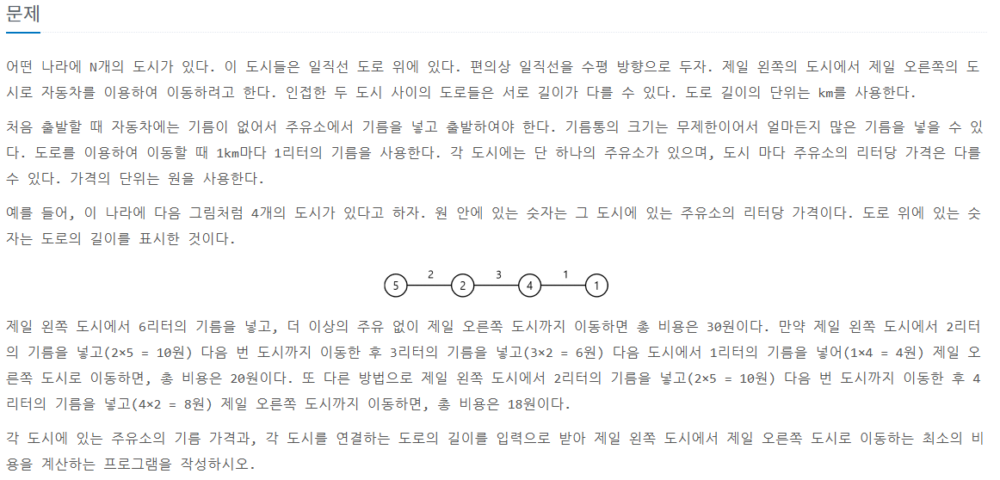

백준 13305번 - 주유소 C++ 문제 해설
1. 문제 설명

이 문제에서는 N개의 도시를 들릴 때, 사용하는 연료의 양을 가장 적게 만들도록 하는 문제입니다.
이 문제의 핵심은 어떻게 해야 가장 싼 값으로 연료를 많이 살 수 있느냐를 고민해야 합니다.
2. 문제 해결 방법
문제를 보면 특징이 있는데 가장 싼 값으로 연료를 파는 곳에서 모든 연료를 전부 사버리게 된다면 가장 싼 값으로 도착지까지 도달 할 수 있습니다.
그렇기에 가장 싼 주유소가 어디인지 알아내는 것이 중요합니다.
가장 기름 값이 싼 주유소를 알아내기 위해서 사용한 방법은 가장 적은 값을 저장하는 변수를 하나 만들어 이 값보다 적은 값이 나오면 갱신해주는 방식으로 최소 값을 찾았고,
이 값을 이동 거리와 곱해서 총 합에 더하여 최종적으로 가장 적은 연료의 값으로 움직이는 방법을 알아 낼 수 있었습니다.
3. 코드 구현
#include
#include
using namespace std;
int main()
{
long a, l = 0;
cin >> a;
long* arr1 = new long[a - 1];
long* arr2 = new long[a];
long* sortArr = new long[a];
for(int i = 0; i < a - 1; i++){
cin >> arr1[i];
}
for(int i = 0; i < a - 1; i++){
cin >> arr2[i];
}
long min = arr2[0];
for(int i = 0; i < a; i++){
if(i == 0){
l += arr2[i] * arr1[i];
continue;
}
else if(min <= arr2[i]){
l += min * arr1[i];
}
else{
l += arr2[i] * arr1[i];
min = arr2[i];
}
}
cout << l;
}